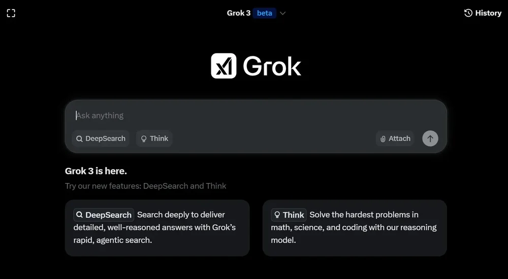

Try It Now
Overview
Grok is xAI's flagship AI chatbot, designed by Elon Musk's team to provide real-time information with a unique twist: direct access to X (formerly Twitter) data and a notably humorous, sometimes rebellious personality. Unlike other AI assistants, Grok is built to answer questions with wit and minimal restrictions, making it stand out in the crowded AI chatbot market.
What makes Grok particularly interesting is its real-time integration with X's vast social media platform. This gives Grok immediate access to trending topics, breaking news, and current events as they unfold. The Grok-2 model brings competitive performance in reasoning and coding, while maintaining the platform's signature personality that can be refreshingly direct or entertainingly sarcastic.
Available exclusively to X Premium subscribers, Grok offers web search capabilities, image generation, and a "rebellious mode" that provides less filtered responses. Whether you're tracking real-time news, generating creative content, or seeking unvarnished answers, Grok delivers a unique AI experience that reflects its creator's philosophy of maximum truth-seeking.
Key Features
Real-time X Integration
Direct access to X (Twitter) data for up-to-the-minute information on trending topics and breaking news.
Humorous Personality
Unique conversational style with wit, humor, and sometimes sarcasm that sets it apart from competitors.
Web Search
Real-time web search capabilities to find current information beyond the training data cutoff.
Image Generation
Built-in image creation powered by advanced AI models for visual content generation.
Rebellious Mode
Less restricted responses with minimal content filtering for users seeking uncensored answers.
Conversational AI
Natural dialogue with context retention and ability to follow complex multi-turn conversations.
Data Analysis
Analyze trends and patterns from X data, providing insights into public sentiment and discussions.
Grok-2 Model
Latest generation model with improved reasoning, coding capabilities, and factual accuracy.
Additional Features
- News Monitoring: Track breaking news and trending stories as they develop in real-time
- Social Media Analysis: Understand public sentiment and discussions on current events
- Coding Assistance: Generate, debug, and explain code across popular programming languages
- Creative Writing: Generate stories, jokes, and creative content with unique personality
- X Platform Integration: Seamless experience within the X ecosystem
- Contextual Awareness: Understands current events context from real-time X data
Pros & Cons
Advantages
- Unique real-time X (Twitter) data access
- Entertaining and humorous personality
- Up-to-date information on current events
- Less restrictive than most AI chatbots
- Built-in image generation capabilities
- Web search for real-time information
- Integrated within X platform
- Rebellious mode for unfiltered responses
- Competitive Grok-2 performance
- Strong at trend analysis
Disadvantages
- Requires X Premium subscription
- Limited to X platform ecosystem
- Smaller user base than ChatGPT
- Can be too casual for professional use
- Less reliable for serious research
- No standalone API for developers
- May provide biased X-centric views
- Limited third-party integrations
Pricing Plans
| Plan | Price | Access Level | Key Features |
|---|---|---|---|
| Free (X Basic) | $0 | No Access | Grok not available on free X accounts |
| X Premium+ | $8/month | Full Access | Grok-2, web search, image generation, all features |
| X Premium+ | $16/month | Enhanced | All Grok features plus X Premium+ benefits, priority access |
| Enterprise | Custom | Custom | Business solutions, team access, advanced analytics |
Best Use Cases
Grok Excels At:
- Real-time News Tracking: Stay updated on breaking news and trending topics as they develop
- Social Media Analysis: Understand public sentiment and discussions on current events
- Trend Monitoring: Track what's trending on X and analyze viral content patterns
- Casual Conversations: Engaging, entertaining dialogue with personality and humor
- Current Events Research: Get immediate information on developing stories and news
- Creative Content: Generate humorous content, memes, and creative writing with personality
- Quick Coding Help: Get coding assistance with a less formal, more approachable tone
- Opinion Analysis: Gauge public opinion on topics based on X conversations
May Not Be Ideal For:
- Users without X Premium subscription
- Formal business or academic writing
- Highly sensitive or regulated industries
- Enterprise-level API integration needs
Comparison with Competitors
| Feature | Grok | ChatGPT | Claude |
|---|---|---|---|
| Real-time Data | X Integration | Web search | Limited |
| Personality | Humorous | Helpful | Professional |
| Restrictions | Minimal | Moderate | Careful |
| Coding | Good | Excellent | Excellent |
| Free Tier | None | Available | Available |
| API Access | Limited | Full | Full |
| Price (Premium) | $8/month | $20/month | $20/month |
Screenshots & Interface

Main Interface
Final Verdict
Our Recommendation
Grok carves out a unique niche in the AI chatbot market with its real-time X integration, humorous personality, and minimal content restrictions. For X Premium subscribers who value up-to-the-minute information and enjoy a less formal AI assistant, Grok offers compelling value. Its ability to tap into X's real-time data stream makes it unmatched for tracking trending topics and current events. However, the requirement for an X Premium subscription and limited standalone functionality may deter some users. Grok is best suited for social media enthusiasts, news junkies, and those who appreciate an AI with personality. While it may not be the best choice for formal professional work, it excels at providing entertaining, timely, and occasionally irreverent assistance. Recommended for X users seeking real-time insights with a side of humor.